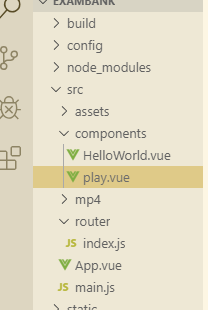
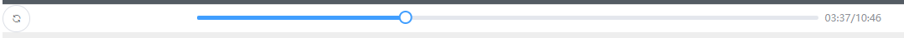

原文出处:本文由博客园博主少年。提供。
原文连接:https://www.cnblogs.com/ouyangkai/p/11549673.html
原文连接:https://www.cnblogs.com/ouyangkai/p/11549673.html
欢迎来到我的友链小屋
首先用vue-cli创建前端项目
参考：https://www.cnblogs.com/ouyangkai/p/11549290.html
新建play.vue文件

编写play组件


<template>
<div>
<el-row>
<el-col :span="4">
<el-popover placement="top-start" trigger="hover">
<div style="text-align: center">
<el-progress
color="#67C23A"
type="circle"
:percentage="music.volume"
></el-progress
><br />
<el-button
@click="changeVolume(-10)"
icon="el-icon-minus"
circle
></el-button>
<el-button
@click="changeVolume(10)"
icon="el-icon-plus"
circle
></el-button>
</div>
<el-button
@click="play"
id="play"
slot="reference"
:icon="music.isPlay ? 'el-icon-refresh' : 'el-icon-caret-right'"
circle
></el-button>
</el-popover>
</el-col>
<el-col :span="14" style="padding-left: 20px">
<el-slider
@change="changeTime"
:format-tooltip="formatTime"
:max="music.maxTime"
v-model="music.currentTime"
style="width: 100%;"
></el-slider>
</el-col>
<el-col
:span="6"
style="padding: 9px 0px 0px 10px;color:#909399;font-size: 13px"
>
{{ formatTime(music.currentTime) }}/{{ formatTime(music.maxTime) }}
</el-col>
</el-row>
<audio ref="music" loop autoplay>
<source src="../mp4/pkn0m-iuv0i.mp3" type="audio/mpeg" />
</audio>
</div>
</template>
<script>
export default {
data () {
return {
music: {
isPlay: false,
currentTime: 0,
maxTime: 0,
volume: 100
}
}
},
mounted () {
this.$nextTick(() => {
setInterval(this.listenMusic, 1000)
})
},
methods: {
listenMusic () {
if (!this.$refs.music) {
return
}
if (this.$refs.music.readyState) {
this.music.maxTime = this.$refs.music.duration
}
this.music.isPlay = !this.$refs.music.paused
this.music.currentTime = this.$refs.music.currentTime
},
play () {
if (this.$refs.music.paused) {
this.$refs.music.play()
} else {
this.$refs.music.pause()
}
this.music.isPlay = !this.$refs.music.paused
this.$nextTick(() => {
document.getElementById('play').blur()
})
},
changeTime (time) {
this.$refs.music.currentTime = time
},
changeVolume (v) {
this.music.volume += v
if (this.music.volume > 100) {
this.music.volume = 100
}
if (this.music.volume < 0) {
this.music.volume = 0
}
this.$refs.music.volume = this.music.volume / 100
},
formatTime (time) {
let it = parseInt(time)
let m = parseInt(it / 60)
let s = parseInt(it % 60)
return (m < 10 ? '0' : '') + parseInt(it / 60) + ':' + (s < 10 ? '0' : '') + parseInt(it % 60)
}
}
}
</script>以上代码直接复制保存即可
引用组件，在app.vue 中的 script 导入组件，并且在components中声明
<script>
import play from '../src/components/play'
export default {
name: 'App',
components: {
play
}
}
</script>
在app.vue template 里面的div 里面添加自定义play组件
<play />
运行项目：npm run dev

成功引用！